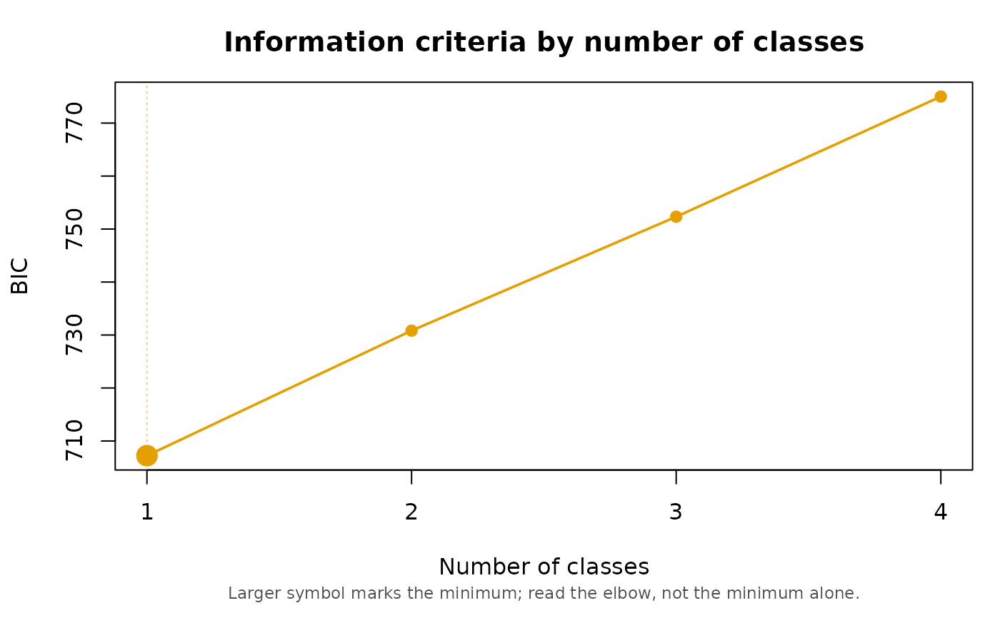
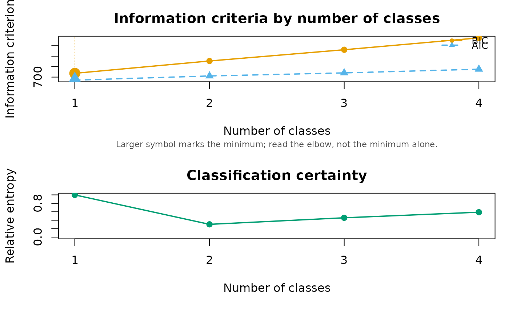

Plots the information criteria from compare_mixtures() or
compare_longitudinal() against the number of classes, which is the
picture the fit table is usually read as. Masyn (2013) describes the reading:
plot the criteria against K and look for the point of diminishing returns
rather than taking the raw minimum, because the BIC often keeps falling
slowly as classes are added without those classes being substantively
distinct. The minimum is marked so it can be seen, not so it can be obeyed.
The plot informs the decision; it does not make it. Ram and Grimm (2009, p. 571) put it that "model selection is an art" — the criteria are one input alongside class size, interpretability and the substantive question.
Usage
# S3 method for class 'mixture_comparison'
plot(x, indices = "BIC", entropy = FALSE, main = NULL, ...)Arguments
- x
A
mixture_comparisonobject, as returned bycompare_mixtures()orcompare_longitudinal().- indices
Character vector, any subset of
"BIC","AIC"and"SABIC". Default"BIC"alone. All three are \(-2\ell\) plus a penalty and so share one axis; the log-likelihood and the entropy are deliberately not allowed on it, being on a different scale entirely.- entropy
Logical. When
TRUE, relative entropy is drawn in a second panel below, on a fixed 0-1 axis. It gets its own panel rather than a right-hand axis, since a twin axis would invite reading the two against each other, which is exactly the comparison it must not support: entropy measures how well separated the classes are, not how well the model fits, and it is not a model-selection criterion.- main
Optional title for the top panel.
- ...
Currently unused. Present for S3 method compatibility.
References
Masyn, K. E. (2013). Latent class analysis and finite mixture modeling. In T. D. Little (Ed.), The Oxford Handbook of Quantitative Methods (Vol. 2, pp. 551-611). Oxford University Press.
Ram, N., & Grimm, K. J. (2009). Growth mixture modeling: A method for identifying differences in longitudinal change among unobserved groups. International Journal of Behavioral Development, 33(6), 565-576. doi:10.1177/0165025409343765
Examples
set.seed(1)
X <- matrix(rbinom(500, 1, 0.5), nrow = 100)
result <- compare_mixtures(X, k_range = 1:4, measurement = "binary",
n_init = 5)
#> Running Model Selection across K = 1 to 4...
#>
#> Fitting 1-class model...
#> Fitting 2-class model...
#> Fitting 3-class model...
#> Fitting 4-class model...
#>
#> === Model Selection Summary ===
#> Classes LL Params AIC BIC SABIC Entropy Unreplicated
#> 1 1 -342.102 5 694.203 707.229 691.438 1.000 FALSE
#> 2 2 -340.085 11 702.169 730.826 696.085 0.303 FALSE
#> 3 3 -337.020 17 708.040 752.328 698.637 0.458 FALSE
#> 4 4 -334.543 23 715.086 775.005 702.365 0.590 FALSE
#>
#> -> Best model according to BIC: 1 classes
plot(result)

plot(result, indices = c("BIC", "AIC"), entropy = TRUE)
